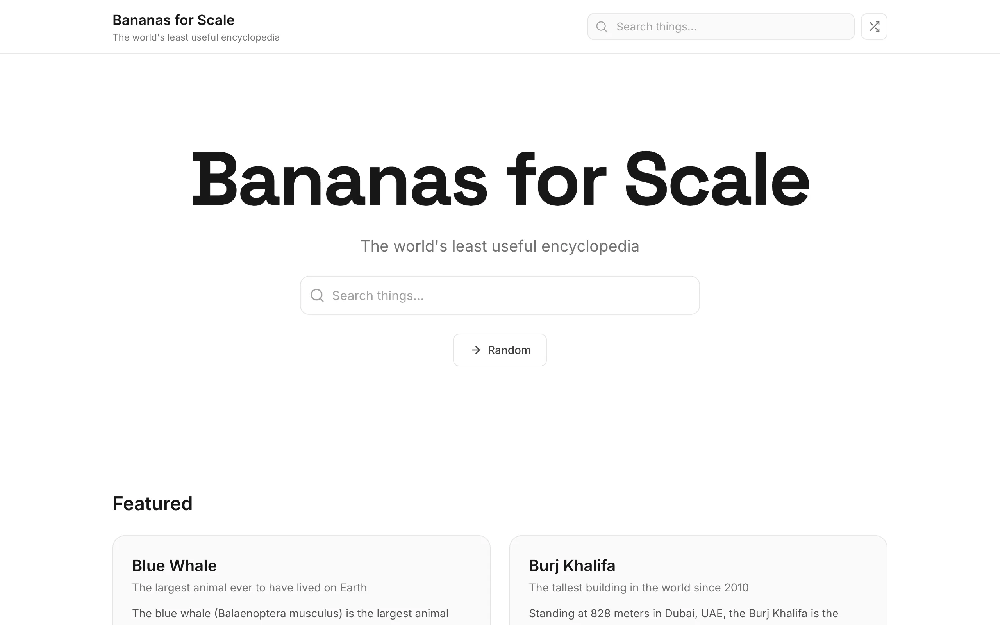
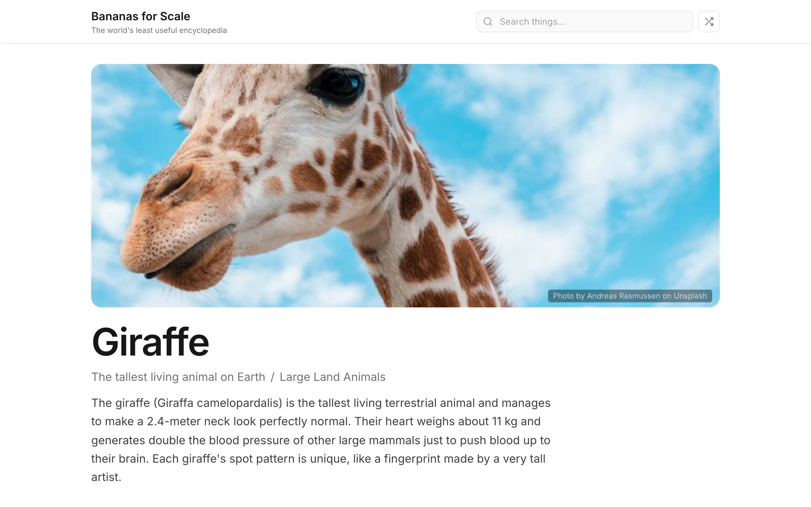

Bananas for Scale is a reference site. You look up a thing, get its real measurements, and see those measurements restated in unconventional units. The International Space Station orbits at 408 kilometers, or about 2.3 million bananas end-to-end. A blue whale weighs 150,000 kilograms, or 300,000 fully loaded burritos. Every conversion uses real SI values. The site just swaps the unit.

{kind=link}
There are 766 things across 57 categories, from a grain of rice to the Andromeda Galaxy. Each has curated SI measurements (length, mass, speed, volume, whatever applies) paired against 1,057 unconventional units spread across 14 dimensions. A golden retriever is 30 kilograms. Nicolas Cage is 84 kilograms. A Subway Footlong is 0.3048 meters. These are the units.

Picking the right wrong unit
Not every unit works for every measurement. A giraffe that's 0.000003 Eiffel Towers tall is a useless number. The conversion engine scores every candidate unit and classifies it as "comprehensible" if the result is finite and non-degenerate (between 10⁻³⁰ and 10³⁰).
Each measurement shows two or three conversions. The first two come from the comprehensible pool. The third, about 60% of the time, is picked from outside the range on purpose. Selection uses a seeded PRNG (Mulberry32, fed by a djb2 hash of the thing's slug and measurement ID) so the same entry always shows the same conversions on every page load. The Remix button generates a new seed and picks different units, all client-side, no network call.

{kind=link}
Static all the way down
The entire site is pre-rendered at build time. A SQLite database holds the things, measurements, categories, and silly units. At build time, Next.js queries the database, runs the conversion engine for every measurement of every thing, and outputs 766 static HTML pages plus 57 category pages. The database doesn't exist at runtime. There's no server, no API, no lambda. The deployed site is a folder of HTML, CSS, JavaScript, and a search index.
Search works the same way. A build script generates a JSON index of all things with their names, categories, and search aliases. The client loads that index and runs MiniSearch (about 7 KB) with prefix matching, fuzzy tolerance, and field boosting that weights names over categories. Results come back in single-digit milliseconds because the entire corpus is already in memory. The search overlay shows up to eight results grouped by category.
The data problem
Curating 766 entries with accurate measurements took more effort than the code. A blue whale's length is well-documented. The mass of a cumulus cloud is not. Every measurement needed a real SI value from a credible source, which meant tracking down specifications, research papers, and occasionally doing the unit conversions by hand to verify the number wasn't off by an order of magnitude. Some things have one measurement. Others have five or six: length, mass, wingspan, top speed, cruising altitude.
The units needed the same treatment. Each carries a singular and plural form ("1 golden retriever" vs. "2.5 golden retrievers") and a dimension tag that constrains which measurements it can pair with. Mass units only pair with mass measurements. Length units only pair with length. The conversion engine enforces dimensional consistency throughout.
Making the numbers readable
The site covers things from sub-atomic particles to the observable universe, so the formatting logic needs to handle a wide range. Values above a million render as "1.2 million" or "3 billion" rather than raw digits. Values between 1 and 999,999 get comma separators. Small values get two decimal places. Very small values use scientific notation. About a dozen branches in the formatter cover the full range, tuned by reviewing actual output across the dataset.
The site is built with Next.js 15, Tailwind CSS 4, Radix UI for accessible primitives, and Motion for the count-up animations and remix transitions. All images are real photography. The whole thing deploys to GitHub Pages for free.